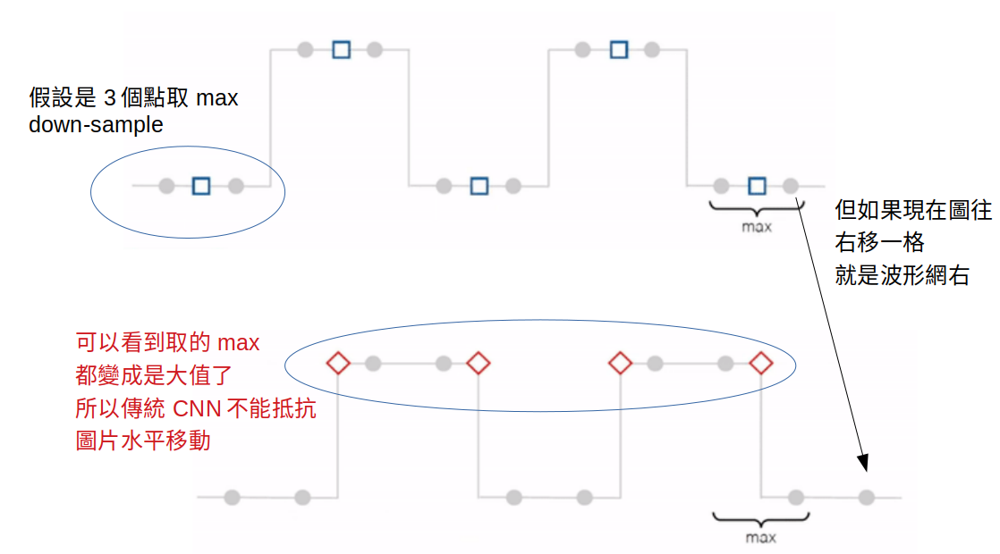
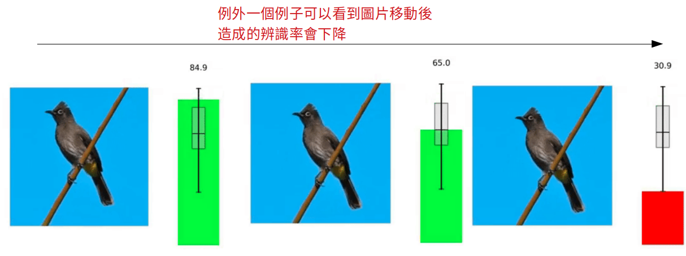
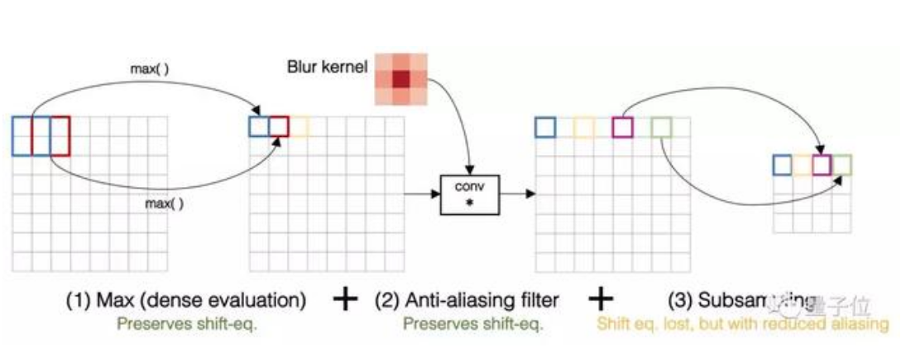
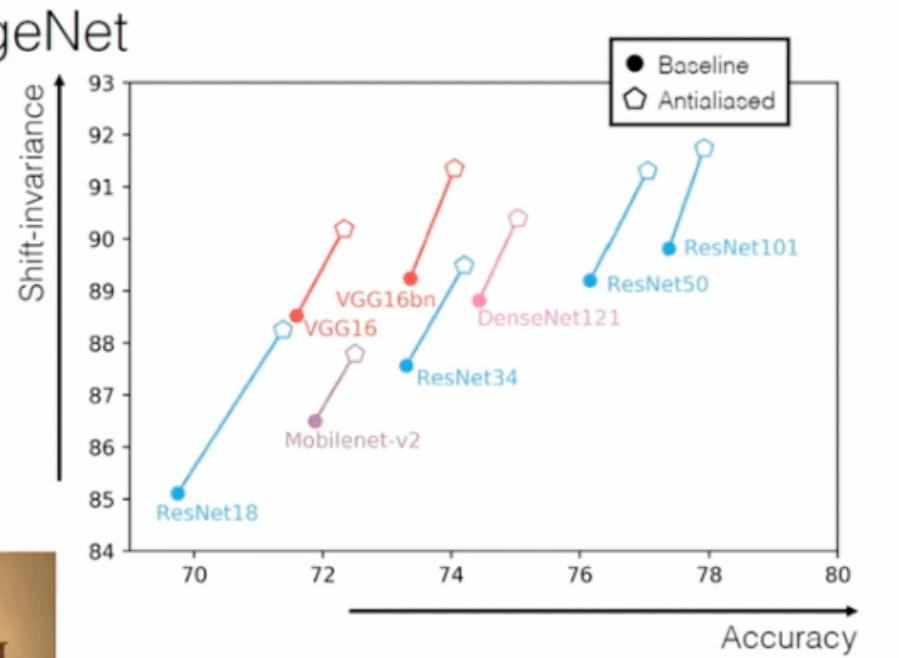

Concept
古往今來，大家都知道：只要圖像一平移，CNN就認不出來了。
=原因就在降採樣身上。不管是最大池化，跨步卷積，還是平均池化，都對平移太敏感
比如，0、0、1、1、0、0、1、1……這樣的周期，最大池化是這樣：


CNN存在采样缺陷。现代CNN中普遍包含二次采样（subsampling）操作，它是我们常说的降采样层，也就是池化层、stride。
它的本意是为了提高图像的平移不变性，同时减少参数，但它在平移性上的表现真的很一般
Solution : More data?
为什么CNN不能从数据中学习平移不变性？
虽然上一节论证了CNN在架构上就无法保证平移不变性，
但为什么它就不能从大量数据里学到不变性呢？
事实上，它确实能从数据中学到部分不变性，那么问题还出在哪儿？
论文的观点是数据集里的图像自带“摄影师偏差”，
很可惜论文作者做出的解释很糟糕，一会儿讲分布，一会儿讲数据增强，非常没有说服力。
但是这个观点确实值得关注，心理学领域曾有过关于“摄影师偏差”对人类视角影响的研究，
虽然缺乏数据集论证，但很多人相信，同样的影响也发生在计算机视觉中。
Solution : Add filter in down-sample
現在，來自Adobe的Richard Zhang (簡稱「理查」) ，讓抗鋸齒和各種降採樣和平共處了。
在保留平移不變性的情況下，還能提升ImageNet上的分類準確率。VGG、ResNet、DenseNet……各種架構都適用。
不止如此， 面對其他干擾更穩定了，如旋轉如縮放；面對輸入圖像的損壞，還更魯棒了
想知道怎樣幫助CNN保留平移不變形，就要了解平移不變性是怎樣打破的。
理查觀察了VGG的第一個卷積層，發現它對平移毫無波瀾，並不是在這裡打破的。
但再觀察第一個池化層，對平移有了反應：平移偶數個像素，表征還不改變，
平移奇數個像素，表征就完全變了。
向網絡深處走，經過的池化層越多，問題就越嚴重。
想解決這個問題，就要把抗鋸齒和降採樣友好地結合到一起。
於是，理查又仔細查看了降採樣過程，把它 (按順序) 分成了兩個部分
第一步沒有問題，完全不會出現鋸齒。
第二步就要改了。理查給中間特徵圖，加了個模糊濾波器 (Blur Filter) 來抗鋸齒，然後再做子採樣：
那麼，「抗鋸齒版最大池化」效果怎麼樣？
平移不變性與準確率兼得
e.g., 要做max pool downsample 的時候
先做(1) dense max (2) blur filter(將資訊模糊) (3) down sample

如果降採樣方法不是最大池化，又怎麼樣呢？
所以，理查還測試了ResNet和MobileNetv2，它們用的是跨步卷積；以及DenseNet，它用的是平均池化：
這些架構也獲得了類似的提升。全面成功。

上面只講了分類這一項任務。而進化後的降採樣，在圖到圖翻譯任務上也同樣有效。
不懼各種變換，以及圖像損壞
不只是平移，像旋轉、縮放這樣的干擾，都可以應對自如；另外，面對輸入圖像損壞 (Image Corruption) ，也變得更加魯棒了。
數據顯示，各種濾波器都能有效增強，應對干擾的穩定性，和應對圖像損壞的魯棒性。其中，最強的過濾器Bin-5表現最佳。